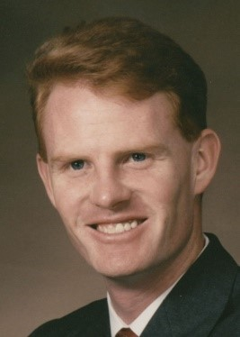

IEEE Wireless Power Transfer Conference 2015
Technologies, Systems and Application
University of Colorado
May 13-15, 2015 | Boulder, Colorado, U.S.A.
IEEE Wireless Power Transfer Conference 2015
Technologies, Systems and Application
University of Colorado
May 13-15, 2015 | Boulder, Colorado, U.S.A.
Development of Sandwich Conversion Modules for Space Solar Power
Speakers: Paul Jaffe, Naval Research Laboratory and James McSpadden, Raytheon
Abstract:
Solar power satellites are proposed as a source of energy for terrestrial use. Architectures suggested vary in orbit selection, means of wireless power transmission, and energy generation method; though most have focused on the combination of geosynchronous orbit, microwave wireless power transmission, and photovoltaics. Recent approaches emphasize highly modular schemes to exploit improved economies of scale inherent in mass production. A key element in many of these architectures is the sandwich module, which performs in its layers three functions: sunlight-to-DC conversion, DC-to-microwave conversion, and microwave radiation. A sandwich module prototyping and testing effort provided insight into how these layers are integrated to address thermal concerns, and offered possible avenues for implementation of the layers and the module as a whole given state-of-the-art efficiency and performance constraints. Matching of solar array characteristics with electronics performance at expected operating temperatures and under projected solar illumination levels proved critical. Because of the layer interdependence of parameters such as efficiency, output power level, and operating temperature, modeling expected performance of an actual hardware implementation is challenging. Accordingly, the ability to test an integrated sandwich module while maintaining access to the separate interfaces between layers, under space-like environmental and illumination conditions, was important in allowing for the determination of optimal operating points. These results may be generalized to modules employing similar architectures. Suggestions for future areas sandwich module research are delineated.
Dr. Paul Jaffe is an electronics engineer, researcher, and integration and testing section head at the Naval Center for Space Technology at the United States Naval Research Laboratory (NRL). In over 20 years at the NRL, he has worked on dozens of missions for NASA, the U.S. Department of Defense, and other sponsors, including SSULI, STEREO, TacSat-1, and TacSat-4. He developed standards and lead spacecraft computer hardware development as part of the Department of Defense’s Operationally Responsive Space effort. Paul served as a coordinator of the NRL’s funded study of the military applications of Space-Based Solar Power, and as an editor of the study group’s final report. He was the principal investigator for a four-year research effort involving the development and testing of modules for conversion of sunlight into microwaves. He received a Bachelor of Science in Electrical Engineering from the University of Maryland, College Park and a Master of Science in Electrical Engineering at the Johns Hopkins University, graduating with honors. He also earned a Ph.D. in Electrical Engineering at the University of Maryland, College Park.

Dr. James McSpadden is an expert in microwave power transmission systems and rectenna design. Working for over 16 years in industry, he has led projects performing system analysis and technology development for various power transmission projects. Dr. McSpadden joined Raytheon in 2005 after 8 years with Boeing in Seattle. In both locations he has led several power beaming studies and experiments for various applications. Dr. McSpadden received his B.S.E.E, M.S.E.E, and Ph.D. diplomas, all from Texas A&M University, in 1989, 1993, and 1998, respectively. Dr. McSpadden has over 20 published papers in journals, conferences, and magazines on microwave power transmission
Wireless Power Transfer: From Directional Power to Omni-directional Power
Speaker: Ron Hui, Professor, Imperial College London and Hong Kong University
Abstract:
In traditional wireless power transfer applications, wireless power is usually directed to the targeted loads placed in well-defined locations or regions. The power flow is usually directional, meaning the wireless power is controlled to flow from the transmitter to the receiver in one direction. Recently, research in transmitting power wireless in all directions on the 2-D and 3-D planes has been addressed. Omni-directional wireless power transfer in the past has low energy efficiency. The speaker will describe a new way of achieving omni-directional wireless power in an efficient manner.
In this presentation, a brief update of new techniques for directional wireless power transfer is firstly presented. Then various omni-directional wireless power transfer techniques reported in the literature and their limitations will be described. Then, the use of the “non-identical current control” for generating magnetic field in an omni-directional manner will be explained. This patent-pending technology can be used to wirelessly charged a multiple of loads placed anywhere in the proximity of the omni-directional wireless power transmitter. This omni-directional wireless power transfer technology has been successfully demonstrated in both 2-D and 3-D systems. Practical results and video demonstration will be presented. The successful implementation of 2-D and 3-D omni-directional power transfer will be illustrated in video demonstration.
Prof. Ron Hui obtained his Ph.D degree at Imperial College London in 1987. He is currently Chair Professor of Power Electronics at both Imperial College London (ICL) and the University of Hong Kong (HKU). At HKU, he holds the Philip Wong Wilson Wong Endowed Professorship. He has published over 180 refereed journal papers. Over 55 of his patents have been adopted by industry. His inventions in planar wireless charging technology underpin key dimensions of “Qi”, the world’s first wireless power standard launched by the Wireless Power Consortium (comprising over 210 companies worldwide), with free-positioning and localized charging features. He was appointed IEEE Distinguished Lecturer by the IEEE Power Electronics Society twice. He received two IEEE Transactions Prize Paper Awards from the IEEE Power Electronics Society in 2009 and 2010. In 2010, he received the IEEE Rudolf Chope R&D Award from the IEEE Industrial Electronics Society and the Crompton Medal for Achievements in Power from the IET, UK. He is a Fellow of the Australian Academy of Technological Sciences & Engineering and is the recipient of the 2015 IEEE William E. Newell Power Electronics Award.
Special Early IEEE MTT Distinguished Microwave Lecture:
A Lucid View on What Role kQ Product Plays in Electric- and/or Magnetic-Coupling Wireless Power Transfer Systems
Speakers: Takashi Ohira, Professor, Toyohashi University of Technology
Abstract:
Harald Friis discovered the law of wave transfer via space in 1946. Claude Shannon revealed the law of data transfer via communication channel in 1949. There must be a certain law for any "transfer" via some medium. This special lecture explores what is the law of wireless power transfer via electric and magnetic couplers. We start with a basic exercise on how to find the maximum power transfer efficiency of a two-port black box that implies arbitrary contact-less coupling. Given that the box's immittance matrix is known, the input and output power are expressed in terms of the voltage vector. The efficiency, defined as output-to-input power ratio, is consequently expressed as a function of the voltage vector. One of Jacobian determinant zeros leads us to realization that product kQ exclusively dominates the maximum power transfer efficiency. We next touch on kQ for some typical electric and magnetic couplers to help the audience confirm their right understandings of the theory. Then, we introduce a convenient parameter called efficiency tangent. The parameter elegantly enables us to reach the law that we are looking for in this lecture. Finally, we see a couple of prototype WPT systems successfully optimized by employing the law. The lecture concludes with warm encouragement to every WTP engineers to exploit kQ, efficiency tangent, and the law we found as versatile pilotages for ongoing and future WPT system design and development.
Takashi Ohira received the B.E. and D.E. degrees in communication engineering from Osaka University, Osaka, Japan, in 1978 and 1983. In 1983, he joined NTT Electrical Communication Laboratories, Yokosuka, Japan, where he was engaged in research on monolithic integration of microwave semiconductor devices and circuits. He developed GaAs MMIC transponder modules and microwave beamforming networks aboard multibeam communication satellites, Engineering Test Satellite VI (ETS-VI) and ETS-VIII, at NTT Wireless Systems Laboratories, Yokosuka, Japan. From 1999, he was engaged in research on microwave analog adaptive antennas (ESPAR antenna) and wave-engineered secret key generator devices at ATR Adaptive Communications Research Laboratories, Kyoto, Japan. Concurrently he was a Consulting Engineer for National Space Development Agency (NASDA) ETS-VIII Project in 1999, and an Invited Lecturer for Osaka University from 2000 to 2001. From 2005, he was Director of ATR Wave Engineering Laboratories, Kyoto, Japan. Currently, he is Professor of Toyohashi University of Technology. He is working on unified theory of Q factors in resonators and oscillators. He is also establishing an RF powering technology for running electric vehicles. He coauthored Monolithic Microwave Integrated Circuits (Tokyo: IEICE, 1997). Prof. Ohira was awarded the 1986 IEICE Shinohara Prize, the 1998 APMC Prize, the 2004 IEICE Electronics Society Prize, the 2012 CEATEC Semi Grand Prix, and the 2013 Nikkei Electronics Wireless Technology Award. He served as APMC International Steering Committee Chair, URSI Commission Chair, and IEICE Microwave Technical Committee Chair. He founded two regional chapters in IEEE MTT Society (Kansai Chapter in 2006 and Nagoya Chapter in 2010). He is an IEEE Fellow, and serves as IEEE Microwave Distinguished Lecturer.